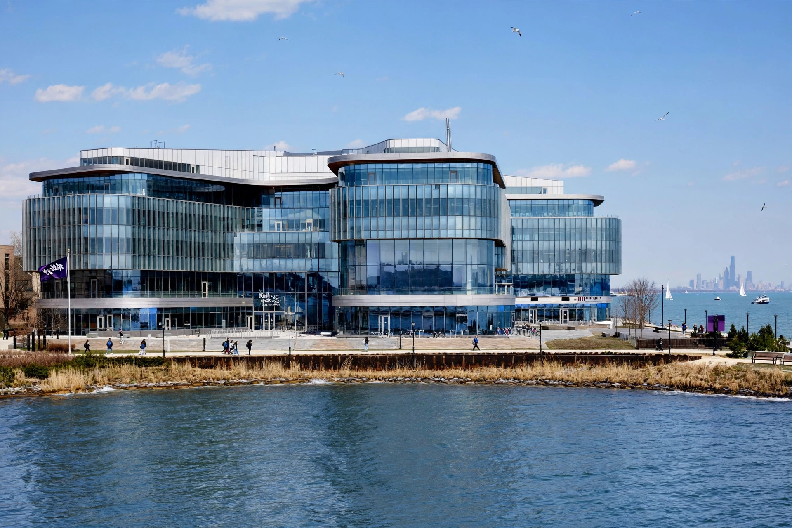

Kellogg School of Management

The Kellogg School of Management at Northwestern University (branded as Northwestern Kellogg) is the business school of Northwestern University, founded in 1908 and located in Evanston, Illinois, on Chicago's North Shore. It is consistently ranked among the top business schools in the world and is a member of the informal "M7" group of elite United States MBA programs.
History
Founded in 1908 in downtown Chicago as the School of Commerce, Kellogg was among the earliest institutions to offer graduate-level management education and was a founding member of the Association to Advance Collegiate Schools of Business. In 1979 the school took its current name after a major donation from John L. Kellogg, son of the Kellogg Company founder W. K. Kellogg. Under dean Donald P. Jacobs, who led the school from 1975 to 2001, Kellogg pioneered a collaborative, team-based teaching culture and rose to the top of national rankings.
Campuses and programs
The school's main home since 2017 is the Kellogg Global Hub, a lakefront building on Northwestern's Evanston campus designed to foster interaction, while executive and part-time programs also operate at Wieboldt Hall in downtown Chicago. Programs include the full-time MBA (including one-year and joint-degree options such as the MMM design-innovation program), part-time and Executive MBA programs, a Master of Science in Management Studies, and doctoral programs. Kellogg is especially noted for marketing — long associated with professor Philip Kotler — as well as management and organizations, strategy, and finance.
Student culture
Kellogg is known for a strongly collaborative ethos — students are evaluated in part on teamwork, and the admissions process historically weighed interpersonal skills. Its global partner network includes exchange and joint programs with schools such as the Guanghua School of Management, WHU in Germany, and the Recanati School in Tel Aviv.